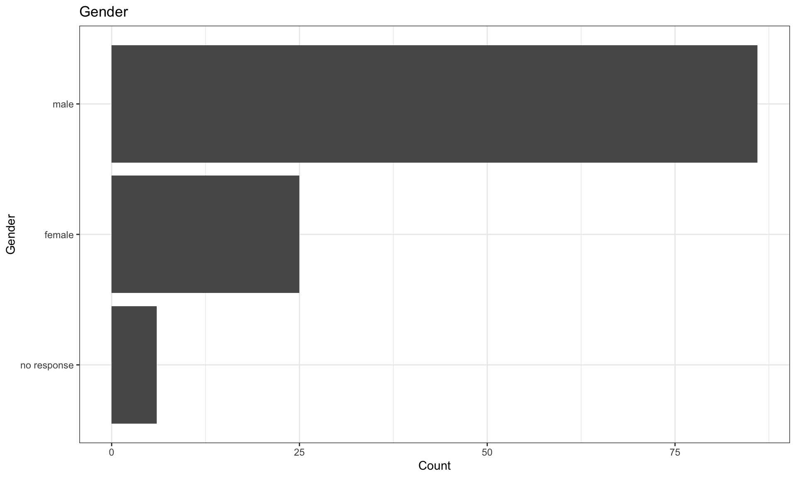

Bioconductor Community Survey Results
Stuart Lee
Monash University, Australia2020-01-29
Source:vignettes/report.Rmd
report.RmdIntroduction
The Bioconductor community survey was conducted via google forms during October - December 2019. It consisted of 40 questions about the usability, uptake and contributions of the Bioconductor project. By the end of the survey there were 117 respondents.
Demographics of respondents
Gender
Responses to the gender question were given as free text, these have been recoded to broad categories using the gendercodeR package.
| Gender | n | percentage |
|---|---|---|
| female | 25 | 21.37 |
| male | 86 | 73.50 |
| no response | 6 | 5.13 |

Career stage
Responses to the career stage and position question were recoded into five broad categories:
- student: representing undergraduate / graduate students
- postdoc: representing postdocs in academia or industry
- academic: representing professors (assistant, full or emeritus), tenure track or PIs in academia
- service: representing staff scientitsts, research assistants or bioinformaticians in academia or industry
- other: any remaining career classification that are ambiguous like ‘industry’
| Position | n | percentage |
|---|---|---|
| academic | 25 | 21.37 |
| no response | 4 | 3.42 |
| other | 10 | 8.55 |
| postdoc | 36 | 30.77 |
| service role | 12 | 10.26 |
| student | 30 | 25.64 |
Industry
There are multiple possible responses indicating that a respondent works accross multiple industries (here the counts will be larger than the total responses).
| Industry | n |
|---|---|
| academia / university | 103 |
| biotechnology (including start-up) | 10 |
| government | 2 |
| hospital / clinical | 9 |
| no response | 1 |
| pharmaceutical | 8 |
Experience with programming and data analysis
R experience
| R experience: How long have you been using R? | n | percentage |
|---|---|---|
| > 10 years | 35 | 29.91 |
| 1 - 2 years | 8 | 6.84 |
| 2 - 5 years | 33 | 28.21 |
| 5 - 10 years | 41 | 35.04 |

Do you use Base R?
| Do you use base R or tidyverse? [Base R] | n | percentage |
|---|---|---|
| Frequent user | 96 | 82.05 |
| Rare user | 1 | 0.85 |
| Sometimes user | 20 | 17.09 |
Do you use tidyverse?
| Do you use base R or tidyverse? [Tidyverse] | n | percentage |
|---|---|---|
| Frequent user | 49 | 41.88 |
| Rare user | 37 | 31.62 |
| Sometimes user | 31 | 26.50 |
Tooling
Programming Languages
Note that we have checked this against the top programming languages listed on github here to check for valid_respones. As a respondent could use multiple languages we have split responses into counts of languages used.
| Language | n |
|---|---|
| python | 69 |
| no response | 21 |
| bash | 18 |
| c++ | 18 |
| c | 17 |
| java | 10 |
| javascript | 10 |
| perl | 10 |
| matlab | 5 |
| shell | 3 |
| sql | 2 |
| c# | 1 |
| emacs-lisp | 1 |
| fortran | 1 |
| go | 1 |
| julia | 1 |
| lisp | 1 |
| mathematica | 1 |
| ruby | 1 |
| sas | 1 |
| scala | 1 |
Types of data analysed
| Types of data | n |
|---|---|
| rna sequencing bulk | 90 |
| single cell genomics | 57 |
| dna sequencing | 46 |
| microarray | 45 |
| methylation | 35 |
| proteomics | 25 |
| metabolomics | 22 |
| imaging data | 13 |
| facs | 10 |
| crispr | 9 |
| no response | 6 |
| chip-seq | 5 |
| atac-seq | 2 |
| cytof | 2 |
| hi-c | 2 |
| nanostring | 2 |
| 16s microbiome | 1 |
| chromosome capture | 1 |
| clinical data | 1 |
| fluidigm | 1 |
| meta-genomics | 1 |
| networks | 1 |
| old-fashioned: elisa | 1 |
| olink | 1 |
| pollution | 1 |
| qpcr | 1 |
| rna modification | 1 |
| some clinical | 1 |
| various genomics | 1 |
Developer Environments
| Developer Environment | n |
|---|---|
| rstudio | 94 |
| command line | 45 |
| emacs + ess | 14 |
| rgui | 7 |
| no response | 2 |
| jupyter lab (via sos for multi-kernel support). | 1 |
| neovim + nvim-r-plugin | 1 |
| snakemake (for non-interactive work) | 1 |
| vim | 1 |
| vim+vimcom | 1 |
How do you use R?
| How do you use R? | n |
|---|---|
| I use functions from R packages to analyze data | 111 |
| I write R functions for use by myself or my collaborators | 104 |
| I contribute to R packages (on CRAN / Bioconductor or elsewhere) | 72 |
| I have written my own R / Bioconductor package and released it via Bioconductor | 69 |
| I have written my own R / Bioconductor package that is shared on GitHub or similar | 62 |
| I have written my own R / Bioconductor package but its not publicly available | 34 |
| I have written my own R package and released it via CRAN | 13 |
| no response | 2 |

Bioconductor
Barriers to contributing
| What barriers are there to contributing your package to Bioconductor? |
|---|
| bioconductor doesnt allow dependency on github packages |
| patchy documentation/tutorials of git versioning (esp. how to prevent big files from occuring in the first place). Guidelines that are clear BEFORE bioCcheck, not after, specialized functions, as in devtools, to check specific check item (e.g. like check_man). It's not clear whether one should contribute to existing package or develop their own. |
| Long delays during submission process |
| building and testing on multiple environments. dependency tracking |
| mostly the code styling |
| Completing my own work |
| Including bash commands in vignettes. The bash commands are part of the workflow, though not required to use my R package. So I built a stand alone website just for vignettes that include the command line part of the workflow. |
| No barriers per se. Initial review, required good documentation and commitment to maintain the package mean more work, but are essential for good quality packages. |
| Guidelines are not easy to fullfil after I had looked at several messages bat the bioc-devel messages and package submission reviews on GitHub, it's obvious that reviewers are requesting changes which often are against guidelines or structure of bioconductor standard classes and tools. Some of thd "standardised" Bioconductor infrastructure tools and classes are unnecessary complicated and instead of making data processing better make tools to be more prone for ert. Automated build systems very often are failing and giving random unreproducible fault reports which quite often are related to bugs in syst configuration or Bioconductor infrastructure tools. |
| Funding |
| Time, code readability (lack of comments, personal coding styles) |
| The package size limitation |
| I am going to do it soon! |
| intellectual property, one-off analyses rather than routine work |
| Investing time into clean code |
| Inaccessible resource to understand S4. |
| When the submission deadline comes around I always find myself too busy. When we are in an “off cycle” release (when devel requires R-devel) I also am less inclined to jump between r versions |
| Career incentives, obscure bioc package requirements |
| Collaborators (and I) don't like what using bioconductor packages does to your namespace |
| I'd like to see the packages hosted on GitHub rather than a separate git server. This would make it easer on the developer side to maintain the package. The example that comes to mind is ROpenSci. |
| I'm not well versed enough in S4 OOP, c++ and Bioconductor conventions to make classes and functions that play nice with other Bioconductor packages. |
| Lack of programming knowledge + domain specific knowledge |
| number of potential users, time |
| Not enough related functions for a coherent package |
| Review time |
| Lacking real examples |
| The git/release process was not obvious to me at first. |
| It is time consuming to write proper documentation. |
| For a first time developer, information required to successfully develop and submit a package is very scattered. It would be great to have a single document that shows a step-wise workflow of how to develop and submit a Bioconductor package. |
| Knowledge of S4 |
| The guidline to avoid :: adds busywork and produces packages that load excessive dependencies that may not actually be used. For infrequently used functions, it would be better to indicate the package it is from with :: in the place it is used. |
| It's a personal package, not suitable for BioC inclusion |
| Initially many of the standards, as I have a non-programmer background, but after the first round of reviews for my first BioConductor package, I do not see many barriers at all, actually. |
| I am not an expert programmer and while I have developed my own customised scripts I am afraid they might not be sufficient quality |
| Time. |
| Complexity of release cycle (e.g., need to maintain several concurrent versions of R); self pressure on contributing something bug-free; few unmet needs (for my use) because very large current offer of packages |
| In my opinion, the biggest barrier is the need to learn S4, which is uncommon outside Bioconductor. |
| Skill |
| S4 objects/functions |
| Don't have the skills to write one |
| Not generally relevant to the general population |
| The review times can be extensive, and the enforced coding guidelines, although very much appreciated, do not always seem to be a must. |
| whether it's good/useful enough to be there |
| Most of my packages are attached to a specific analysis project; they are too throwaway for release on bioconductor. |
| Time to tidy-up the scripts, optimize and submit. |
| the workflow of submitting a package is not very straight forward and the response time in the submission forum could take up to more that 2 weeks, which makes progress slow |
| Knowledge |
| Strict dependencies, i.e., I can't depend on GitHub packages for a Bioconductor package |
| documentation/test overheads - only useful for code that is useful to many (not Bioconductor specific) |
| Creating data packages for the vignettes |
| Git. |
| submission and review process (the rigor is appropriate and documentation is good) |
| time consuming but it is OK |
| Time, so not your fault |
| The S4 requirements would require a significant rework, and it utilizes non-CRAN/Bioconductor packages. |
| Poor introduction to S4 design |
| The requirement for creating the PDF Reference Manual. It is simply to easy to make something that makes this process brea. |
| no barriers, work incomplete at this point |
Getting help
| Source | n |
|---|---|
| support site | 36 |
| vignette | 32 |
| no response | 23 |
| manual | 21 |
| 15 | |
| biostars | 12 |
| slack | 7 |
| seqanswers | 2 |
| stack overflow | 2 |

Aspects of Bioconductor
| aspect | No Response | Very Dissatisfied | Dissatisfied | OK | Satisfied | Very Satisfied |
|---|---|---|---|---|---|---|
| Bioconductor annotation resources | 24 | 2 | 7 | 22 | 42 | 20 |
| Bioconductor core classes and packages | 12 | 3 | 10 | 15 | 30 | 47 |
| Bioconductor F1000 workflows | 53 | 2 | 2 | 10 | 22 | 28 |
| Bioconductor GitHub repository | 38 | 1 | 8 | 18 | 30 | 22 |
| Bioconductor training material | 29 | 2 | 11 | 30 | 26 | 19 |
| Bioconductor's package documentation | 5 | 1 | 6 | 19 | 48 | 38 |
| Bioconductor's support site | 18 | 3 | 10 | 18 | 39 | 29 |
| Bioconductor's website | 5 | 4 | 15 | 26 | 43 | 24 |
| Breadth of Bioconductor packages | 10 | 1 | 5 | 15 | 40 | 46 |
| Data Visualization | 18 | 2 | 9 | 18 | 39 | 31 |
| Ease of use of Bioconductor packages | 3 | 1 | 8 | 28 | 52 | 25 |
| Interactive R/Shiny | 52 | 6 | 4 | 16 | 27 | 12 |
| Overall satisfaction with Bioconductor | 3 | 2 | 4 | 9 | 45 | 54 |
| Package submission and review process | 39 | 2 | 7 | 9 | 27 | 33 |
| Quality of Bioconductor packages | 3 | 2 | 3 | 20 | 50 | 39 |
Experiences with Resources and Packages
| Please tell us about your experience with Bioconductor annotation resources (e.g. annotation packages, biomaRt, AnnotationHub, ...) |
|---|
| It’s a difficult problem to tackle and think the solutions in place are admirable. They can be a bit laborious to use, but I’m not sure that I have any tangible suggestions on how to make it better |
| biomaRt is OK for human, what about more bacteria? |
| biomaRt relies on servers, and I'm unsure of the story on reproducibility if it exists at all, so it is something I will be avoiding. AnnotationHub looks to provide a great advance in reproducibility. It would be nice if there were a website to browse its contents, as I'm sure it contains great resources I'm not aware of. |
| I used to use biomaRt a lot, but then moved on to org*db packages. I haven't use AnnotationHub much yet. |
| I use several annotation package routinely. |
| I developed an adequate annotation workflow using biomaRt and various BioC annotation packages prior to the development of AnnotationHub and haven't yet had the time to "update" my workflow to take advantage of AnnotationHub. |
| It's hard to keep track on what is the current best practice for accessing these data types. Maybe this is hard to do without seeming to unfairly promote one tool, but I'd love to have a tutorial available for common tasks (e.g. getting gene locations for a specific annotation version) that is always updated. |
| I use them regularly, but I do not interact with them more than you do in standardized work flows. |
| Very easy to use. But it is difficult to convert all alias to entriz id. |
| I love it. It's so much easier to get annotations from AnnotationHub and genomes from various BSgenome packages than to download them via ftp from Ensembl. |
| Works as it should, happy about it. |
| I'm more likely to use biomart or a versioned GTF file than a package. |
| annotation packages work well, but focused on NCBI IDs/system; biomaRt slow and often down; ensembldb/AnnotationHub works well for basic annotation |
| Many options, easy to lose overview |
| have used biomaRt, BSgenome, TXDB |
| I use to use them as a first option to |
| it's my main source of annotation |
| Don't use |
| used rarely because there is not much support for non-model organisms or prokaryotics |
| Not easy to gain and keep the overview, yey very well integrated |
| no |
| Download to slow, should be made tidyverse-compatible |
| was once stupid enough to maintain a db0 package *and* GenomicFeatures pkg |
| great |
| I do not use them often. I work primarily with Human and Mouse data and keep text files for GENCODE to Hugo Symbol conversion. I rarely do high-throughput gene name conversion |
| AnnotationHub, ensembldb, and annotation packages (TxDb) for transcript databases |
| Annotationhub |
| Great once you get the hang of it but same problem as every bioconductor package: too many classes to keep track of. |
| I find AnnotationHub difficult to use, and the metadata for the resources on it are frequently lacking. |
| Biomart is very unreliable, a huge liability to depend on because its resources are often offline and frequently updates that breaks backwards compatibility. |
| work well |
| Very positive experience with biomaRt, also with annotation packages, though I've been annoyed that many are chiefly UCSC-based and didn't seem have an ensembl counterpart, and that there are competing annotation platforms (with different packages working with different annotation platforms, making it sometimes difficult to use a single one for everything). Never used AnnotationHub much, probably should... |
| Great when they work. Huge hassle when they update. I'm doing my job and not following every season's new API. Just want my old code to keep running. |
| Hard for a first-comer to understand how to create AnnotationHub data, kind of formats supported and best practices |
| sometimes hard to keep up and find what's needed although it IS somewhere |
| I frequently use TxDb packages (very nice interface), only rarely AnnotationHub (usually work with downloaded flat-files stored in a project folder) |
| I generally tend to find these opaque and difficult to interact with outside function written specifically to interact with these (e.g. GenomicFeatures). Translating Ensembl IDs to Refseq IDs is a task I dread every time. |
| Good idea, but can be hard to find out how to do stuff. Intransparent API. Unclear documentation |
| Good experience with annotation packages (BSgenome, etc). Some frustration with biomaRt due to frequent updates leading to difficulty in reproducing results exactly (they have the archive versions, but it can be a challenge just to figure out which version was used). |
| very useful to have genome annotations like BSgenome packages and packages to manipulate genomic regions like GenomicRanges package |
| I frequently use AnnotationHub for non-model organisms |
| Usually works as expected, but analyzing/merging annotation data on both transcript and gene level is inconvenient (because 2 different types of infrastructures exists; TxDb and Org.Db). Would be nice if these could be better integrated. I prefer to use the Ensembl.Db's over biomaRt because the latter uses online queries that are not always stable. |
| Positive, they work nicely (except when I tried to annotate a E. coli variant which I don't know why it failed to create an annotation package from NCBI data) |
| They are sufficient such that I can do my job more quickly and reliably. |
| I struggled to find out how to use / develop for it |
| It's easy to get and handle data coming from Bioconductor annotation resources. |
| We need more training material, particular when the data is from non-human |
| Used/using mostly ensembldb EnsDb packages (via AnnotationHub) |
| I haven't had any problems so far. |
| Need to intro-guide to resources even for those of us who have been using them for a while. Need newsletter/blog of whats new and resources are available. |
| Good that they exist! |
| biomart works great |
| I use them frequently and they work as expected. Although I understand the underlying complexity, I think some operations should be easier (i.e. get the position of 5 genes by symbol) |
| The stateful API is hard to use, wish there was a web front end (if there is I can't find it) |
| I prefer annotation packages I have experienced site failure with biomart. I use Stephen turners annotables package frequently when frustrated with complicated interface for bioc annotation resources |
| Can always get what I need |
| Not super easy to understand how they work. |
| haven't used in a long time |
| The ability to use specific ensembl releases in biomaRt is really good. I tend not to use annotation sources if I can't bind them to a specific release. |
| I use them very often, but I prefer biomaRt instead of annotation packages. In general the id conversions should be made easier, they are not for everyone. |
| I used biomaRt for last 3yrs abd swiched to AnnotationHub now. Love the caching... |
| biomaRt have some issues connecting to sever, the others are fine |
| I don't use annotation that often. In the past, when I was a more active analyst I used biomaRt a lot. biomaRt is great but the occasional connection issue makes it annoying at times. I have used AnnotationHub for teaching and it has been great. |
| ID conversion is a nightmare and support resources are complicated an not easy to grasp. Might be an issue with underlying data (especially for non coding RNA) |
| I have very little experience with those. |
| None |
| biomaRt is great, use it all the time. Same for the annotation packages. |
| Please tell us about your experience with Bioconductor ExperimentHub |
|---|
| I have not use ExperimentHub |
| very little |
| The stateful API is hard to use, wish there was a web front end (if there is I can't find it) |
| Not used it |
| ExperimentHub is a bit clunky from the dev point-of-view. I would like my data input process to be more streamlined. That means not having an intermediate person updating the EH resources manually. |
| relatively new to it, like the idea |
| None |
| Not used. |
| no |
| Not used yet |
| It seems like a nice idea. Not sure what it contains. |
| Mainly used it to retrieve ensembldb databases |
| I don't use it that often since I usually process fastq files from scratch. I would like a greater variety of newer data on ExperimentHub. |
| Tried only once but liked it! |
| Never used it. |
| rarely use |
| Not used yet |
| I don't have any experience with ExperimentalHub. Why should I? |
| I've never used it |
| not applicable |
| I have no idea on how to use this. I haven't found enough resources showing their usage nor enough publicity to have been made aware of them. |
| I don't know about ExperimentHub at all. |
| Never used. |
| havent usd |
| EH is a truly brilliant creation |
| not applicable (harly used yet) |
| None |
| Great way to logically organize data and experimental setup |
| I didn't feel like I really knew what I was doing, and what the next steps are |
| It's got a wonky submission process - needs to be streamlined. An end to end example might be helpful, as it's not immediately clear how the submission documents will be vetted or how explicit you need to be when showing how data is prepared. |
| none |
| None |
| Don’t use experimenthub all that much |
| never heard of |
| Bon |
| It's very convenient to access datasets for vignettes and unit tests. |
| haven't used |
| I haven't used ExperimentHub yet. |
| No experience |
| I love ExperimentHub! It does sound a bit overwhelming from a user's perspective, it is much better when used behind the curtains in other packages (e.g., TENxPBMCData or scRNAseq). |
| I dont have experience |
| I keep forgetting it exists. Not user friendly. Datasets not on Bioconductor package view like experiments data so difficult to know whats is there |
| I don't have a lot of experience using ExperimentHub. |
| none |
| N.A. |
| None |
| I don't frequently use it |
| Have submitted a ExperimentHub package |
| extremely useful to discover new data for, e.g. quick pilot studies/analyses, demonstration of methods, testing new hypotheses etc. But I resolve to original data sources in the long run. |
| No idea what that is |
| What is that? |
| Very difficult to make new package, instructions to technical |
| limited |
| I struggled to find out how to use / develop for it |
| Don't use |
| Not enough non human data. |
| Which Bioconductor packages do you use most frequently? |
|---|
| limma, phyloseq, dada2, edgeR, DESeq2 |
| DECIPHER Biostrings |
| DESeq2, limma, EBImage, phyloseq, dada2 |
| edgeR; limma; scater; scran; DropletUtils; SingleR; org.db and ensembldb; etc |
| GenomicRanges, rtracklayer, DESeq2 |
| BiocGenerics, GenomicRanges, Biostrings , SummarizedExperiment |
| scater, scran |
| edgeR, SingleCellExperiment |
| EdgeR, DEseq2, ChIPpeakAnno |
| Biostrings |
| BSgenome, GenomicRanges |
| edgeR, SummarizedExperiment |
| biomaRt, DESeq2, edgeR, ChIPpeakAnno, RUVseq, several others |
| Differential expression (edgeR, DESeq, limma, ...) |
| GRanges, limma |
| limma, SingleCellExperiment/scran/scater, DelayedArray/HDF5Array, GenomicRanges/Biostrings/rtracklayer |
| xcms, MSnbase, ensembldb, FamAgg, S4Vectors, IRanges, limma |
| now: GenomicAlignments, ShortRead, Subread previously: limma, DESeq2 |
| GenomicRanges |
| those related to NGS, annotation and plots |
| edgeR |
| GRanges, VariantAnnotation, regioneR, limma, karyoploteR, BSgenome.Hsapiens.UCSC.hg19, TxDb.Hsapiens.UCSC.hg19.knownGene, org.Hs.eg.db, |
| Xcms |
| GenomicRanges |
| xcms |
| limma and edgeR |
| DESeq2, chipSeeker, DiffBind, ChIPQC, biomaRt, |
| Use a wide range of R/Bioc packages. Limma, SingulaR, RTrackLayer, Complexheatmap, |
| DESeq2, AnnotationHub |
| S4Vectors, IRanges, GenomicRanges, GenomicFeatures |
| DESeq2, edgeR, limma, tximport |
| deseq2, goseq |
| SummarizedExperiment, DelayedArray |
| tximport, edgeR, Biostrings, rtracklayer, ... |
| S4Vectors, IRanges, GenomicRanges, Rsamtools, RNAmodR |
| DESeq2,tximport, DiffBind |
| MSnbase, Biostrings |
| limma, edgeR, rtracklayer, sva, Glimma, tximport, orgDBs |
| SummarizedExperiment, GenomicRanges and those related to them. ggplot |
| GenomicRanges, edgeR, limma |
| limma, minfi, genomicRanges, preprocessCore, Deseq, edgeR, |
| SummarizedExperiment! |
| scater, scran, SingleCellExperiment |
| limma, DESeq2, SummerizedExperiment |
| Deseq2, edger, genomic ranges |
| Deseq2 |
| DESeq2, limma, vsn, pheatmap |
| SingleCellExperiment, SummarizedExperiment |
| DaMiRseq, Deseq2, limma, phyloseq, tximport, EBImage |
| core packages (e.g. GenomicRanges, BSgenome, Biostrings and their dependencies), own packages (:-), edgeR, ... |
| limma, MSstats |
| limma |
| SingleCellExperiment, RaggedExperiment, MultiAssayExperiment, MOFA, bsseq |
| Deseq2 |
| GenomicRanges |
| BSgenome, QuasR, Txdb known gene packages, Rsamtools, GenomicFeatures, tximport, JASPAR2016 |
| Anything related to RNA-seq and single-cell RNA-seq, edgeR, DESeq2, scater. |
| limma |
| DESeq2 |
| FlowCore, DepecheR, SimpeSingleCell, scran, scater, SingleCellExperiment |
| limma and deseq2 |
| SingleCellExperiment |
| dplyr, purrr, SingleCellExperiment, org.Hs.eg.db |
| AnnotationDb, clusterProfiler, limma |
| Phyloseq, genomicRanges |
| SeqArray, SeqVarTools, GENESIS |
| Other than the core packages and classes, I use DESeq2 and limma |
| Singlecellexperiment karyoploter |
| GenomicRanges, GenomicFeatures, AnnotationHub, ensembldb, DropletUtils, BSgenome.Mmusculus.UCSC.mm10, Biostrings, plyranges |
| Lots. Maybe granges? |
| GenomicRanges, SummarizedExperiment |
| GenomicRanges, S4Vectors, BiocGenerics, MultiAssayExperiment |
| org.Hs.eg.db, edgeR, DESeq2, limma, topGO, reactome.db, fgsea, clusterProfiler |
| annotatr, bsseq, chipenrich, GenomicRanges, minfi, ENmix, |
| SummarizedExperiment, GenomicRanges, Biostrings, SingleCellExperiment |
| rhdf5,GenomicRanges,VariantAnnotation,snpstats |
| Hard to say... DESeq2? |
| mixOmics |
| MultiAssayExperiment, SummarizedExperiment |
| RNA-seq related packages |
| limma, edgeR, biomaRt |
| limma, edgeR |
| SummarizedExperiment, SingleCellExperiment, TreeSummarizedExperiment |
| SingleCellExperiment, edgeR |
| Limma, edgeR, genomic ranges |
| limma, affyPLM, oligo, edgeR, tximport, clusterProfiler |
| IRanges, GenomicRanges, rtracklayer, S4Vectors, DESeq2, EdgeR, scran |
| limma, edgeR, DESeq2, csaw, BiocParallel, rtracklayer, SummarizedExperiment, GenomicRanges, |
| affy, lumi, beadarray, complexHeatmaps, vsn |
| edgeR, limma, DESeq2, monocle |
| GenomicRanges, BSgenome Packages |
| DESeq2, limma, EnhancedVolcano, PCAtools |
| SummarizedExperiment |
| GenomicRanges, rtracklayer, IRanges, ChipPeakAnno, Chipseeker, ComplexHeatmap, DESeq2, edgeR, scater |
Opinions on Bioconductor
Best Parts
| What are the best aspects of Bioconductor? |
|---|
| open and friendly community |
| Robustness. |
| package managment |
| minimal level of software quality and support, single source/repository with broad collection of tools |
| load packages, manage dependencies, documentation |
| Having a dedicated platform. Standardization of data formats. |
| The fact that many of the packages integrate so well. |
| responsive community, strive to make things easier and more accessible |
| Open source community and cutting edge. |
| Biostrings |
| class system, structured inheritance possible |
| The review of the packages at the submission is very good. I learn a lot of looking into them. Perhaps it could be further improved asking feedback of domain experts through slack or other official channels. Forcing to have at least one vignette improves user experience a lot. |
| Not just function documentation, but the vignettes. The community. |
| First, the community. Second, technical aspects: fixed releases ensure all packages work and work well together, packages are (usually) well documented; use of standard data data containers ensure interoperability and ease of use of results generated by new packages. |
| Its staff |
| Deseq2 support |
| Everyone is approachable! Fast response to questions in the forum. |
| Community, knowledge sharing |
| the community |
| Well crafted code |
| Community of users, breadth of packages |
| The documentation |
| Interoperability between (most) packages |
| The Bioconductor community is great. I enjoy being able to identify with a group of like-minded individuals. |
| breadth of available packages |
| Community |
| The base packages are excellent, and the overall quality of user-contributed packages is quite good. |
| The open source nature of the project and the community around the project are awsome. |
| Community and package system |
| forced documentation -> packages are quality certified at least minimally |
| cutting-edge, open-source, community |
| open community, long term maintenance and support from developers |
| The easy of distribution and the use of vignettes |
| Community, higher documentation standards, efforts for standardization |
| Modularity, interoperability, and being open source |
| Documentation, continuous testing, core classes, interoperability of packages |
| It makes very high-level analysis possible |
| required vignettes, package review process, CI build checks across platforms |
| It is great to have a place where all things biological R are collected on the internet. I really like some core bioconductor classes. |
| High performance, great maintenance |
| Easy to install,good quality,stay updated |
| commitment to open-access, interoperability |
| Breadth of Bioconductor packages and training course. Huge community, easy to find help |
| The community. People generally want to help you use their package effectively. |
| Things just work, I never seem to have version/dependencies conflicts; one finds good documentation; there's often good inter-operability |
| IRanges |
| Generally, it helps to increase the reliability in bioinformatics software. In the field of bioinformatics, Bioconductor is un-matched in what it does. I long for the day when people can no longer just put random, un-tested code online. |
| Centralised repository of R packages for bioinformatics |
| Good community, active development and community involvement |
| Friendly community; openness; package and code submissions are appreciated by Bioconductor. |
| Nice community |
| community. workshops. |
| Vignettes, wide range of excellent methods, great community |
| Number of available tools, ease of installation, documentation. |
| Quality of software and the breadth of things you can learn from the support forum. Vignettes, too |
| Documentation |
| Interoperability |
| I like the generics and the methods for GRanges, TxDb, EnsDb, and sometimes DNAStringSet that have consistent user interface. I also like the strict requirements for documentation. |
| Great leadership, great community |
| package review process |
| The established classes (ExpressionSet, DGEList, etc) |
| the SCE class & how many/most single cell packages easily interact with it. |
| Vignettes! And documentation in general. Also, the community is always very helpful in forums, emails, etc. Definitely improved over R-help/R-devel. |
| Shared API across inherited classes, E.g. [ |
| It's a great dependency manager, coding standards are pretty helpful to ensure developers can make the most of other packages |
| Overwhelmingly comprehensive resource, interoperable packages. |
| The support and the tutorials |
| community + community standards, documentation, code stability, ... |
| Statistics and graphs |
| documentation and compatibility between packages |
| Vignetters and course information and workflows. |
| Regularly updated; great in-depth documentation; support site; variety of tools; consistent object types; |
| the community! |
| Packages are generally very good, well maintained, authors are able to be reached |
| The best aspect is that most of (not all!) packages have a clear tutorial which allows users to understand how each function works. |
| Every package has a vignette, and S4 class |
| Great core packages, wide range of packages |
| friendly community lower code duplication and increases interoperability |
| The vignettes in a workflow style, giving people an easy-to-go immediate manual. |
| free, easy to access |
| community |
| dependency downloading |
| Lots of packages. |
| High-quality review of bioinformatics software and resource for multiple R packages for different aspects |
| central location for nearly all bioinformatics R packages, good documentation, good standards for inspection/curation of incoming packages |
| Common data structures. Good documentation |
| package documentation, high-standard review process. |
Worst Parts
| What are the worst aspects of Bioconductor? |
|---|
| Packages changing without notification |
| steep learning curve, due to large number of packages it takes effort to find the most appropriate package for analysis |
| Redundant information across the website for developers; e.g. the developer resources at https://bioconductor.org/developers are spread across many articles and should be re-written to be simpler and with less redundancy |
| That some packages are not as integrated as they could be. It would be great if integrating to core structures would be even more strictly enforced, so that the flow from package to package would be seamless. |
| It is difficult to get tutorials about how to use the programs, particular about the formats used to get in the programs, when the data is raw, not already in R. |
| Hacking at ESets to easily use ggplot2; the duplicate packages; those packages that auto-install other bioconductor packages (this plays hell with my conda envs); `AnnotationDbi::select` vs `dplyr::select` collisions |
| documentation |
| Old package with weird code base |
| DataFrame and tidyverse-non compatibility, the Bioconductor website |
| Sometimes trying to get everyone to use the same infrastructure (ie common classes) might be overly restrictive, especially if the Bioc class is not as efficient as some non-Bioc options |
| 6-monthly devel/master cycle can sometimes be inconvenient |
| Finding out the required non-bioconductor dependencies can sometimes be a pain. |
| Sometimes Bioconductor can be quite insular. I love the concept of S4Vectors for example, but they don't tend to play nice with for example tidyverse packages or other neat packages on CRAN (e.g. data.table) that are outside Bioconductor. |
| S4 classes are somewhat cumbersome to write. |
| finding useful docs through website. |
| there is no good overview of the overall packages and functionalities, very often the same functionality is written in different packages in different manners. |
| Finding packages, vignettes are hit-or-miss |
| Bioconductor tends to duplicate efforts (some packages have their parallels in CRAN, like the BiocParallel and parallel, or future). This makes harder to learn about packages and uses and makes feel that Bioconductor is aside the large R community. Also, once a package is approved the authors can introduce changes without review, which sometimes is abused to introduce methods that wouldn't get through review. |
| None |
| When a function gets deprecated |
| For beginners it is difficult to know where to start |
| There can be large difference in the quality of packages. Coding styles can be very different and make some packages difficult to use, understand, or debug. |
| Too many tools (very often redundant) |
| I hated the fact that it took me a long time to be able to use bioconductor successfully. There is probably no way around it, since the packages and the analyses they perform are fairly advanced, but any thing can be done on this front would be useful. |
| The community was quite closed a few years ago, it has improved a lot. |
| needs to become more diverse in terms of gender and under-represented minorities in the community and eventually to leadership roles |
| It is hard to et help or see code for S4 methods/classes |
| Package discovery |
| high start-up cost for prospective developers makes it kind of an exclusive club |
| Some packages have really poor documentation! Most are good, because of the Bioconductor review process. However some have poor docs, maybe because a lot of new functionality was added after acceptance |
| Poor maintenance of core packages |
| too many packages have overlapping functionalities (or are redundant) |
| the density of the documentation (probably unavoidable given BioC's breadth) |
| Website. Documentation on its Bioconductor S4 classes is poor. These are often bundled SummarizedExperiment points to RangedSummarizedExperiment. IRanges, Granges. Please make youtube guides and link in vignettes for the main classes |
| tech debt in some project areas (website most notably) |
| Limited use of tidyverse approaches |
| S4 generics. Interaction of Bioconductor with tidyverse |
| Documentation of some packages can be out of date |
| Ease for reproducing analysis (e.g., how to rerun an analysis with specific versions of packages); working with release and devel packages at same time |
| variable quality of software/usability/documentation; inter-dependencies break code in other packages and create a need for constant updates and maintenance |
| too many packages, maybe there should be some kind of filter?? |
| The website is confusing at times, and it's not always easy to find the resources, e.g., help with git for maintaining packages. |
| I wish that the requirements for unit testing are more stringent. Also, though I have tried SingleCellExperiment, I still prefer Seurat, which is not a Bioconductor package, but I do wish that Seurat has better function documentation. Also, the vignette requirement and time limit for R CMD check are somewhat annoying since I have to limit the vignette to small toy datasets. Since single cell data is getting larger, I put vignettes demonstrating analysis of normal sized scRNA-seq on a stand alone website so I can take my time to rerun them if needed. |
| difficult to find a package, packages need to be ordered better on the site |
| Some "minor" packages are not easy to understand. The Bioconductor object formats are not always easy to understand. |
| The website and the sheer number of classes to keep track of. The website does not allow discover-ability of classes or generics. I also can't see the source code for a package on the Bioconductor website. This would be pretty convenient. |
| Dependencies of the packages, unstable version of packages... sometimes are incompatible with diff version of R. |
| Documentation is often spotty and confusing. Especially in the user-contributed packages, but also in the core Bioconductor packages. |
| Data formats and exploration of objects is very counter intuitive if you learned R and the Tidyverse before going into Bioconductor |
| some lack of standardization, due to packages coming from many sources. In some cases, too many layers of abstraction make it hard to understand what the underlying data structures are really doing. |
| Constant update of packages. It was easier to maintain workflow when changes where pushed only twice a year. |
| Obliging packages to use the latest version of R |
| lack of overview. |
| Leaving package documentation up to package authors is always a bit dicey. |
| S4. S4 makes Bioconductor incompatible with most non-bioconductor packages, leading to wasted effort (poorly) duplicating non-bioconductor functionality in bioconductor (e.g ggbio,plyranges) |
| Basing every second release on r-devel |
| unstructured universe of packages, little training (it's good time to have MOOCs, e.g. on DataCamp for core packages). |
| Complicated infrastructure classes. Unnecessary limiting code guidelines. E.g. 50 line function length, ignoring power of R core functionality. |
| Community |
| version of packages not linked to version of Bioconductor |
| hmm, there were surprising changes in system-level dependencies |
| That I have to update R to often. |
| The community. People can be dismissive of non-Bioconductor packages for seemingly no reason. New contributors may not find themselves up to snuff for many Bioc devs - code reviews can be harsh. It's not a place many beginner-intermediate R users will be tempted to try to contribute to. This isn't really a Bioconductor thing though, more just a result of many of the devs contributing to it being experts and having high standards (which isn't a bad thing). |
| Sometimes frustrating that nothing stays the same over versions; scripts almost always need updating (might be unavoidable, the field is moving fast too) |
| small community can feel cliquish (around labs/institutes/twitter activity) |
| Trying to imitate Java. Load time of some core packages seems unnecessarily high, and also produces verbose messages. DataFrame type doesn't play well with Tidyverse. |
| Very poor guides on core S4 system. |
| dependency building |
| Optimization of core packages |
| the updates that break backwards compatibility. Requires a lot of time to depend on bioconductor packages because things break every bioconductor update... |
| Three aspects. First, there is not a standard, concerning the manual creation; some manuals are very precise and comprehensive, while others are too much bare and simplistic. Second, the website is not use-friendly, especially for a new-user. Finally, as a developer I'm interested in more information about my packages, not only the number of downloads (e.g., the Countries where the package is downloaded; if the package is downloaded by a Bioconductor developer or a simple user; ...) |
| S4 Class complexity |
Future Work and Comments
Ideas for the Community
| Do you have suggestions for new activities to benefit the user or developer community? |
|---|
| More workflows and more training |
| More Datathons |
| Meetups/newsletters/blogs of gists/more youtube video /courses (capentry) |
| Maybe create a slack channel, youtube tutorials |
| Structured and inaccessible guide to develop bioconductor packages. |
| Hackhathon to encourage interaction between package developers (and interested users), to promote understanding and contribution to packages by new or existing developers. |
| User workflows are good, developer community might benefit from more prominent examples for inheriting, good practices and coding style |
| Give more training how to build packages. Once you lear how to compile and build, you understand much better how to use the packages and how to ask for help. |
| An S3-based GRanges. I want a plain old vector where each element has the seqname start and end. to be make it fancy maybe store the seqinfo as an attribute. I basically want the lubridate API but for the genome. |
| not really, maybe community hackatons to fill in feature gaps? |
| The organization of specific workshops/schools/meetings, led by groups of Bioconductor developers, to face specific tasks: one dedicated to machine learning, one to deep learning, one to RNA-Seq analysis, one to SNP identification, and so on. |
| No, I'm sorry. |
| Hack-a-thons, community retreats (un-conf), Bioconductor softball tournament! |
| Workshops are always great. |
| Don't require all new packagws to use bioconductor infrastructure tools if there is no need. |
| Something like the tidyverse developer day could help onboarding new users |
| The submission and review process is great. I just don't understand why the packages are not hosted on GitHub directly! Maybe there is a technical reasons for it but models line the ROpenSci are working, so why not. I also think the developers mailing list can be improved. Maybe it's my email client, but I can't follow the conversations and there is no way to show code and messages properly. Maybe a slack channel! |
| Not really |
| I like the F1000 Bioconductor workflows (i also use them for teaching), so please keep this going. Another suggestion: better indicate the number of downloads of a package because this can serve for new users as indicator which package is popular and should be considered essential. |
| More workflows such as F1000 and highlighting strategies that have non-standard analyses to provide some intuition of extensions of methods that are useful. |
| Not really. I'm not aware that bioconductor does much community outreach. It would be nice to have a disqus-type comments section at the end of the workflow pages |
| The availability of tutorials but going beyond the use of humans and data already in R. |
| It would be nice to have a recurrent screencast (monthly?) through youtube or similar, in which Marin or some other core member shows what's new in Bioconductor. Sometimes it is hard to update your pipeline with the latest packages and/or best practices. |
| Not an activity really- but a package primer/vignette on 10 key things when developing a Bioc package or similar would we useful for new developers to ease their entry into the Bioc developer world. |
| Package developer introduction book (like http://r-pkgs.had.co.nz/) with focus on Bioconductor packages: ie. best practices, pitfalls etc. |
| don't assume we have root or sudo, I use R so I can run scripts, but so many packages assume I can update Python and Fortran and it's impossible |
| Not that I found. |
| I wish Bioconductor would have more transparent development. I'd like to know what development is going on and other news in packages I'm interested in, in the same way I could go to the ggplot2 github package and follow the discussion there so I may learn about the reasoning behind certain decisions. For example, I still don't understand why I can't lapply over a GRanges object anymore. |
| There needs to be an standardised guide /tutorials to use each library. Not only with data from the creators. Many times when you try to use your own data it does not work or it is not clear because the authors simply used a function on their built-in data and the results are not extrapolated. |
| not sure -- hackathons seem like just a way to amortize bad technical debt |
| hackathon-like' events for students to create useful packages. |
| More of the bookdown style tutorials like "orchestrating single cell", but they need to be updated more often / benchmarked against competing tools. |
| Re-analyse existing published data comparing choices and tools, data analytic competitions. |
| Blogs to "best/most useful packages/most useful new packages", MOOCs, offline training as conference satellites |
| Better S4 tutorials, especially extending core S4 classes |
| Referred to the previous comment "packages overview": there should be better uniformity between the packages. 1. Giving to the developers a unique repository of available packages and functions. (in such a way no-one reinvents the wheel). This can be useful for package reviewers and for developers. 2. If a new function is proposed with the same "aim" of an existing one (in another package), it'd be useful to highlight the why and how it is "better" than the existing one. In case it is really better than the old one, three possible approaches: 2.1 substitute the existing function with the new one 2.2 implement the "better" aspects in the old function 2.3 release the new function in the new package, printing a info message on the existing of the old functions |
| More tutorials maybe (please not using video!); dedicated team in charge of optimizing slow packages; dedicated team in charge of (re)implementing packages of methods used in one field but not available in R (e.g., I really appreciated the reimplementation of SingleR) |
| More intermediate to advanced workshops. There is a gap between beginner/easy and advanced courses. |
| more engagement activities at e.g. RLadies or other ways to bring more diverse users into the community |
| Create wordles or even better text clustering of package descriptions. Embed bioschemas and/or make authors improve annotation of packages in bio.tools |
| One thing that I think would be a great quality increase (even if I understand that that would need many more of the developers to engage in reviewing) would be that each package would undergo re-review every two years, or something like this. Otherwise it is possible to get the package into BioConductor, and then starting to slip from the standards. |
| no |
| not exactly new, but I appreciate the local meetup events! |
| Expand the community beyond RNASeq and cancer |
| Direct participation in things like the NLM/NCBI codeathons/hackathons might be cool. |
| A better overview of common S4 object classes (update and expand http://bioconductor.org/packages/release/bioc/vignettes/S4Vectors/inst/doc/S4QuickOverview.pdf) |
Limitations
| What analysis would you like to do in Bioconductor but currently cannot? |
|---|
| not everything needs to be done using Bioconductor, I am happy to use other tools if it fits better to a given task, such as imaging data analysis |
| Not sure how to manage very large datasets best. Confusion over delayedArray etc. Connect to python |
| I can't think of any at the moment. |
| Single cell analysis is fragmented over so many packages. https://osca.bioconductor.org/ is a good start, but it is actually too complex. scRNA-seq analysis is pretty much the wild west right now, especially once spatial/Visium come out. I use Seurat because it is both sophisticated yet easy to use, and only occasionally pull in a few BioC functions. |
| anything in base R, or even anything non-bioconductor. C and C++ libraries play well with CRAN/tidyverse, not so much with S4. |
| Proteomics, tidyverse integration |
| none |
| Make Biostrings better |
| N.A. |
| Real time access to genomic data |
| Better support for population genetics (Like hail, but for R). Better core packages for dna binding motifs (pwms) and gene ontology. |
| None that I can think of |
| Nothing more. |
| An similar version to bedtools. Fast and simple to do. The learning curve for bio conductor is high for those from non computer background. |
| Would like to have Seurat package that is compatible with SCE objects |
| Would like more training and workflows |
| RNA velocity, PAGA |
| local support. |
| Cross species interactions, especially microbial, equivalent of STRING but across species. |
| One where I don't have to convert DataFrame to data.frame |
| RNA velocity |
| something like IGV is kind of missing from Bioconductor, current packages are clunky |
| Mass cytometry analysis (I'm developing a package) |
| Create big datasets comfortably, e.g. with on disk backend. |
| Hi-C analysis on bioconductor seem quite sparse. |
| RNA velocity (I have very little faith in the overly complex and not well documented velocyto.R implementation) |
| analysis tools, package articles, training. |
| Increased usability of core packages, like a countOverlaps() using score column for hits, etc. |
| I'd like to see more evolutionary genomics type of analysis/pacakges and resources in general. |
| visualization (Gviz, ggbio but with continued support/development)? |
| Get easier access to a wide variety of GRanges/bed files from public data (e.g. ChIP-seq experiments). Also, not Bioc specific but in R it is hard to do some dimensionality reduction techniques/matrix factorization with big data (more specifically, I would like to do partial least squares regression with a large number of variables) |
| N/A |
| Image analysis |
| really wish Rsamtools would write SAM/BAM files as I've written a package to correct PacBio reads in R. right now I have it output FastQ files. I guess I could do SAM pretty easily but it would be nice to do BAM and I have no idea how to do that. |
| deep learning |
| my_dge %>% filter(feature_id %in% some_set) %>% filter(sample_treatment != "undesirable-treatment") %>% ggplot2(aes(x = sample_treatment, y = intensity)) + geom_boxplot() |
| Whatever Seurat can do but SingleCellExperiment based packages can't, such as data integration. But meanwhile, I wish that Seurat can work with HDF5Array for data that can't fit into memory. |
| I would like to access data on Google Big Query / Table programmatically. It's still an area I need to get familiar with. |
| There are some genomic range operations that are vey easy with bedtools but rather complex with GenmocRanges |
| dplyr support for DataFrame (working on it) |
| Facilitating single-cell genomics benchmark of methods, parameter exploration, using parallel/cloud computing where possible. It is technically possible, but requires more time than any individual scientist or research group really has, I think. Teamwork could facilitate this. |
Other Comments
| Is there anything else you'd like to tell us? (e.g. future vision for Bioconductor, ...) |
|---|
| Great resource and software |
| Not really |
| Keep up your great work! |
| No |
| great work - most valuable to the community and the research field(s) - keep it up! |
| some sort of SimpleBioC intro to the core classes & workflows would be neat |
| Keep up the great work - I couldn't do my job without you! |
| Thanks, for all the work in creating an awesome community |
| Keep up the great work! |
| Keep up the great work! |
| As Bioconductor continues to standardize around a simple set of types, the userbase will become less and less skilled and also vastly larger. I hope this can continue. |
| The growing number of Bioc packages is sometimes counter productive, especially when users need to try several "bad" packages before finding the "good" one. Perhaps Bioc can afford to be more selective in the packages that it accepts. I find it already a good practice to discontinue packages that are not maintained and systematically fail the nightly builds |
| It would be nice if there could be curators for each area (RNA, genomics, epigenomics, data visualisation , etc) who could review packages and somehow create a whole integrative tutorial for each area with open access data and using several packages. Perhaps YouTube videos similar to those of Dave Robinson on tidy Tuesday. |
| Try to normalize the vocabulary and not multiply packages that do the same thing but with different terminolgy, it seems like a waste of resources. More carefully check the statistical correctness of packages, not just computational correctness. |
| very grateful to the Bioconductor community |
| Improve the website to make it easier to explore packages with a more modern interface |
| Keep on with the good stuff - you made me a better (working) person by embracing your philosophy and learning from you all. |
| Perhaps writing a guidebook or filming a tutorial about how to use all the Bioconductor resources could help all the users. Also some kind of announcement on each release about not only the deprecated packages but new packages and improvements on the existing packages would help to move forward. Upon acceptance of a package in Bioconductor it is accepted that the maintainers must be reachable and answer questions about the package however this is rarely enforced or encoded in some way (answers older than 6 months without answers from the maintainer count or should we wait for 6 more months?). |
| Many thanks for all your work and dedication. |
| At the Bioc meeting, there is a group who all know each other as they all shared PIs. Bioc diversity should ensure it's not dominated by a few PIs, & their postdocs who are now PIs. |
| Thank you |
| Keep on going with the good work!!! |
| It would be very nice if you could announce the release schedule further ahead of time to help us plan. Currently I think the review process focuses to much on classes, methods etc an less on usability and user friendly documentation. |
| Keep up the great work |
| Keep up the good work, and thanks for all! |
| no |
| While the contributions from people at places like MIT/Harvard and other ivy league schools has been incredibly helpful and a great service to the Bioc/scientific community (and hopefully will continue), it might be nice to increase involvement from people at other universities. Also, at the latest Bioc conference (2019) I looked around at one point in one of the bigger rooms with a lot of people and I don't recall seeing any African American people. Just an observation. Overall my experience with Bioconductor has been great so thanks to all those who have contributed time and effort! |
| My major concern for the project is sustainability. If the project is to continue, I would hope that it looks past current funding mechanisms and finds alternate revenue streams. For example, Bioconductor can very well provide professional services such as consulting, package / code review, analysis at a cost to companies and individuals. |
| I wish bioconductor had a bigger emphasis on converting between Bio-specific data formats and generic base R data structures. |
| I know some R packages that implement cool ideas that forever remained on GitHub and never made it to Bioconductor. I wonder if the stricter requirements for Bioconductor packages are intimidating to some package authors. It was a lot of work to get my package to fulfill the requirements. |
| Keep on rocking! |
| Keep up the good work! :-) One thing: in order to focus resources on new code instead of fixing broken legacy code, I value as much backward compatibility as reasonable and a minimum of breaking changes eg to core packages. I have been quite happy with BioC in this respect, in contrast to eg certain RStudio pkgs that are otherwise appealing but simply less useful if you have to maintain your analysis code. |
| Keep up the good work |
| Thak you for so many great packages!! |